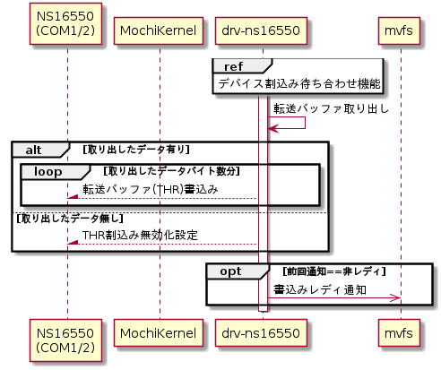
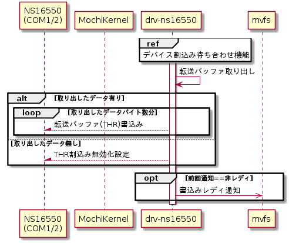

デバイス転送機能
デバイスからの割込みを契機に1～16byteのデータを内部バッファから取り出してデバイスに書き込む。バッファが空だった場合は割り込みを無効化する。以下にシーケンス図を示す。
シーケンス図


データ転送
drv-ns16550が持つ転送バッファから最大16byte分(デバイスの転送FIFOサイズ)のデータを取り出して、1byte毎にTHR(Transmit Holding Register)にデータを書き込むことでデータ転送を行う。データが転送バッファに無い場合は行わない。シリアルポート毎に対応するTHRのI/O portを以下に示す。
THRのI/O port
| COM1 | COM2 |
| 0x03F8 | 0x02F8 |
THR割込み無効化
転送バッファにデータが存在しない場合はTHR割込みを抑止するために、IER(Interrupt Enable Register)に以下の設定を行って割込みを無効化する。
THR割込みの無効化
| I/O port | bit | 値 | 意味 | 備考 | |
| COM1 | COM2 | ||||
| 0x03F9 | 0x02F9 | 7-4 | 0 | 予約 | |
| 3-2 | - | 変更しない | |||
| 1 | 0 | THR割込み禁止 | THR: Transmit Holding Register | ||
| 0 | - | 変更しない | |||
書込みレディ通知
デバイスファイルの書き込みが可能か否かの通知を最後に非レディとして通知していた場合は、mvfsに書込みレディ通知を行う。書込みレディ通知はmvfsライブラリのLibMvfsSendVfsReadyNtc()を用いて行う。設定するパラメータを以下に示す。
LibMvfsSendVfsReadyNtc()の設定パラメータ
| # | 引数名 | 設定値 | |
| COM1 | COM2 | ||
| 1 | *pPath | "/serial1" | "/serial2" |
| 2 | ready | MVFS_READY_WRITE | |
| 3 | *pErrNo | エラー格納先変数ポインタ | |